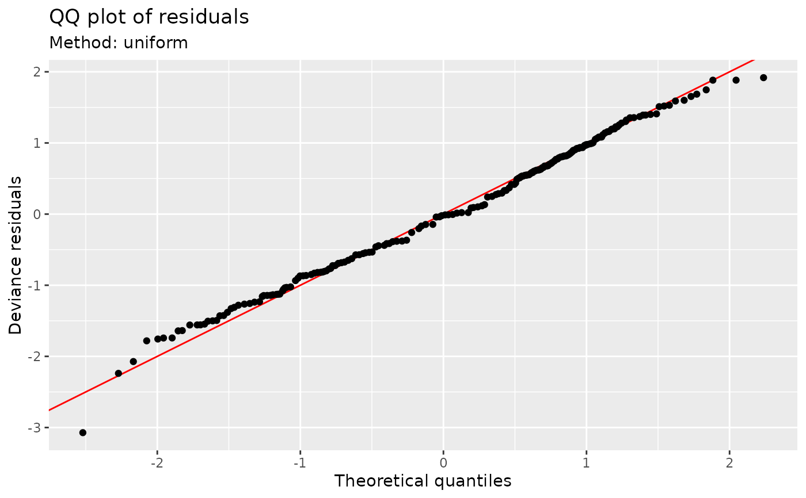

Quantile-quantile plot of model residuals
qq_plot(model, ...)
# S3 method for default
qq_plot(model, ...)
# S3 method for gam
qq_plot(
model,
method = c("uniform", "simulate", "normal", "direct"),
type = c("deviance", "response", "pearson"),
n_uniform = 10,
n_simulate = 50,
level = 0.9,
ylab = NULL,
xlab = NULL,
title = NULL,
subtitle = NULL,
caption = NULL,
ci_col = "black",
ci_alpha = 0.2,
point_col = "black",
point_alpha = 1,
line_col = "red",
...
)
# S3 method for glm
qq_plot(model, ...)
# S3 method for lm
qq_plot(model, ...)Arguments
| model | a fitted model. Currently only class |
|---|---|
| ... | arguments passed ot other methods. |
| method | character; method used to generate theoretical quantiles. Note
that |
| type | character; type of residuals to use. Only |
| n_uniform | numeric; number of times to randomize uniform quantiles
in the direct computation method ( |
| n_simulate | numeric; number of data sets to simulate from the estimated
model when using the simulation method ( |
| level | numeric; the coverage level for reference intervals. Must be
strictly |
| ylab | character or expression; the label for the y axis. If not supplied, a suitable label will be generated. |
| xlab | character or expression; the label for the y axis. If not supplied, a suitable label will be generated. |
| title | character or expression; the title for the plot. See
|
| subtitle | character or expression; the subtitle for the plot. See
|
| caption | character or expression; the plot caption. See
|
| ci_col, ci_alpha | fill colour and alpha transparency for the reference
interval when |
| point_col, point_alpha | colour and alpha transparency for points on the QQ plot. |
| line_col | colour used to draw the reference line. |
Note
The wording used in mgcv::qq.gam() uses direct in reference to the
simulated residuals method (method = "simulated"). To avoid confusion,
method = "direct" is deprecated in favour of method = "uniform".
Examples
load_mgcv()
## simulate binomial data...
dat <- data_sim("eg1", n = 200, dist = "binary", scale = .33, seed = 0)
p <- binomial()$linkinv(dat$f) # binomial p
n <- sample(c(1, 3), 200, replace = TRUE) # binomial n
dat <- transform(dat, y = rbinom(n, n, p), n = n)
m <- gam( y / n ~ s(x0) + s(x1) + s(x2) + s(x3),
family = binomial, data = dat, weights = n,
method = "REML")
## Q-Q plot; default using direct randomization of uniform quantiles
qq_plot(m)

## Alternatively use simulate new data from the model, which
## allows construction of reference intervals for the Q-Q plot
qq_plot(m, method = "simulate", point_col = "steelblue",
point_alpha = 0.4)
 ## ... or use the usual normality assumption
qq_plot(m, method = "normal")
## ... or use the usual normality assumption
qq_plot(m, method = "normal")